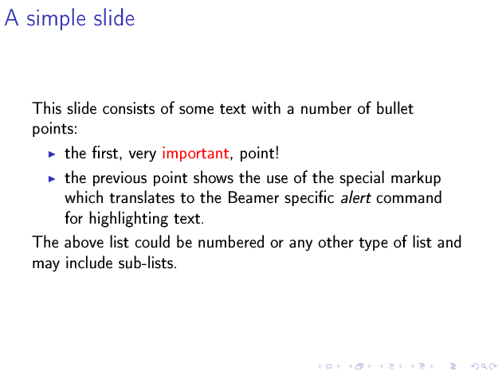
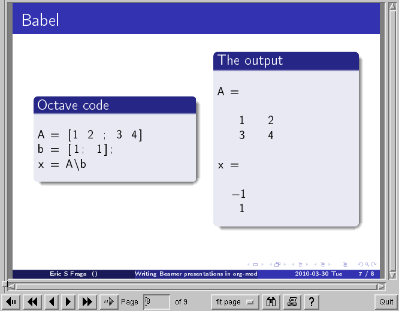
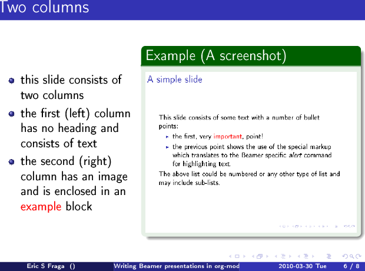
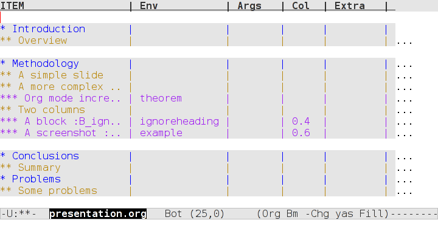

Writing Beamer presentations in org-mode
Table of Contents
1 Introduction
Beamer is a LaTeX package for writing presentations. This documents presents a simple introduction to preparing beamer presentations using org-mode in Emacs.
This documents assumes that the reader is already acquainted with org-mode itself and with exporting org-mode documents to LaTeX. There are tutorials and references available for both org-mode itself, for LaTeX exporting, and for Beamer exporting. The document also assumes that the reader understands the notation for Emacs keybindings.
2 First steps
2.1 The export template
Starting with an empty file called presentation.org [1], say, the
first step is to insert the default org export template (C-c C-e t
with the default keybindings). This will generate something that looks
like this (some specific entries will vary):
#+TITLE: Writing Beamer presentations in org-mode #+AUTHOR: Eric S Fraga #+EMAIL: e.fraga@ucl.ac.uk #+DATE: 2010-03-30 Tue #+DESCRIPTION: #+KEYWORDS: #+LANGUAGE: en #+OPTIONS: H:3 num:t toc:t \n:nil @:t ::t |:t ^:t -:t f:t *:t <:t #+OPTIONS: TeX:t LaTeX:t skip:nil d:nil todo:t pri:nil tags:not-in-toc #+INFOJS_OPT: view:nil toc:nil ltoc:t mouse:underline buttons:0 path:https://orgmode.org/org-info.js #+EXPORT_SELECT_TAGS: export #+EXPORT_EXCLUDE_TAGS: noexport #+HTML_LINK_UP: #+HTML_LINK_HOME:
In this default template, you will want to modify, at the very least,
the title, as I have done, as this will be used as the title of your
presentation. It will often be useful to modify some of the LaTeX
export options, most commonly the toc option for generating a table
of contents. For this document, and the associated sample
presentation, I have left all options as they are by default according
to the template.
2.2 Beamer specific settings
As well as the general options provided by the template, there are Beamer specific options. The following options are what I use:
#+startup: beamer #+LaTeX_CLASS: beamer #+LaTeX_CLASS_OPTIONS: [bigger]
The first line enables the Beamer specific commands for org-mode (more on this below); the next two tell the LaTeX exporter to use the Beamer class and to use the larger font settings[2].
2.3 Outline levels for frames (slides)
The following line specifies how org headlines translate to the Beamer document structure.
#+BEAMER_FRAME_LEVEL: 2
A Beamer presentation consists of a series of slides, called frames in Beamer. If the option shown above has a value of 1, each top level headline will be translated into a frame. Beamer, however, also makes use of LaTeX sectioning to group frames. If this appeals, setting the option to a value of 2 tells org to export second level headlines as frames with top level headlines translating to sections.
2.4 Column view for slide and block customisation
The final line that is useful to specify to set up the presentation is
#+COLUMNS: %40ITEM %10BEAMER_env(Env) %9BEAMER_envargs(Env Args) %4BEAMER_col(Col) %10BEAMER_extra(Extra)
The purposes of this line is to specify the format for the special interface that org-mode provides to control the layout of individual slides. More on this below.
Once all of the above has been set up, you are ready to write your presentation.
3 The slides
Each slide, or frame in Beamer terminology, consists of a title and the content. The title will be derived from the outline headline text and the content will simply be the content that follows that headline. A few example slides are presented below. These will only cover the basic needs; for more complex examples and possible customisations, I refer you to the detailed manual.
3.1 A simple slide
The simplest slide will consist of a title and some text. For instance,
* Introduction ** A simple slide This slide consists of some text with a number of bullet points: - the first, very @important@, point! - the previous point shows the use of the special markup which translates to the Beamer specific /alert/ command for highlighting text. The above list could be numbered or any other type of list and may include sub-lists.
defines a new section, Introduction, which has a slide with title A simple slide and a three item list. The result of this with the settings defined above, mostly default settings, will generate a slide that looks like this:

Figure 1: Simple slide exported from org to LaTeX using beamer
3.2 A more complex slide using blocks
Beamer has the concept of block, a set of text that is logically together but apart from the rest of the text that may be in a slide. How blocks are presented will depend on the Beamer theme used (customisation in general and are described below).
There are many types of blocks. The following
** A more complex slide
This slide illustrates the use of Beamer blocks. The following text,
with its own headline, is displayed in a block:
*** Org mode increases productivity :B_theorem:
:PROPERTIES:
:BEAMER_env: theorem
:END:
- org mode means not having to remember LaTeX commands.
- it is based on ascii text which is inherently portable.
- Emacs!
\hfill \(\qed\)
creates a slide that has a title (the headline text), a couple of sentences in paragraph format and then a theorem block (in which I prove that org increases productivity). The theorem proof is a list of points followed a bit of LaTeX code at the end to draw a fancy end of proof symbol right adjusted.
You will see that there is an org properties drawer that tells org that the text under this headline is a block and it also specifies the type of block. You do not have to enter this text directly yourself; org-mode has a special beamer sub-mode which provides an easy to use method for specifying block types (and columns as well, as we shall ).
To specify the type of block, you can type C-c C-b [3]. This brings up
a keyboard driven menu in which you type a single letter to select the
option you wish to apply to this headline. For the above example, I
typed C-c C-b t. The options selected in this manner are also shown
as tags on the headline. However, note that the tag is for display
only and has no direct effect on the presentation. You cannot change
the behaviour by changing the tag; it is the property that controls
the behaviour.
3.3 Slides with columns
The previous section introduced the special access keys (C-c C-b)
for defining blocks. This same interface allows you to define
columns. A headline, as the text that follows it, can be in a block,
in a column, or both simutaneously. The | option will define a
column. The following
** Two columns
*** A block :B_ignoreheading:BMCOL:
:PROPERTIES:
:BEAMER_env: ignoreheading
:BEAMER_col: 0.4
:END:
- this slide consists of two columns
- the first (left) column has no heading and consists of text
- the second (right) column has an image and is enclosed in an
@example@ block
*** A screenshot :BMCOL:B_example:
:PROPERTIES:
:BEAMER_col: 0.6
:BEAMER_env: example
:END:
, #+ATTR_LATEX: width=\textwidth
[[file://../../images/org-beamer/a-simple-slide.png]]
defines a two column slide. As the text in the slide says, the left
column is a list and the right one is an image. The left column’s
headline text is ignored, specified by C-c C-b i which tells org to
ignore the headline text completely. The column on the right
however is placed with an example block (whose appearance will
depend on the Beamer theme).
The columns also have widths. By default, these widths are the proportion of the page width to use so I have specified 40% for the left column and 60% for the right one.
The image in the right column is inserted simply by specifying a link
to the image file with no descriptive text. I have added an attribute
to the image (see the #+ATTR_LATEX line above) to tell LaTeX to scale
the image to the full width of the column (\textwidth).
3.4 Using Babel
One of my main uses for Beamer is the preparation of slides for teaching. I happen to teach Octave to engineering students. Org provides the Babel framework for embedding code within org files. For teaching, this is an excellent tool for presenting codes and the results of evaluating those codes.
For instance, the following code:
** Babel
:PROPERTIES:
:BEAMER_envargs: [t]
:END:
*** Octave code :BMCOL:B_block:
:PROPERTIES:
:BEAMER_col: 0.45
:BEAMER_env: block
:END:
#+name: octaveexample
#+begin_src octave :results output :exports both
A = [1 2 ; 3 4]
b = [1; 1];
x = A\b
#+end_src
*** The output :BMCOL:B_block:
:PROPERTIES:
:BEAMER_col: 0.4
:BEAMER_env: block
:BEAMER_envargs: <2->
:END:
#+results: octaveexample
#+begin_example
A =
1 2
3 4
x =
-1
1
#+end_example
will generate a slide with two blocks and a pause between the display of each of the two blocks:

Figure 2: The use of babel for code display and execution
4 Customisation
Org has a very large number of customisable aspects. Although daunting at first, most options have defaults that are suitable for most people using org initially. The same applies to the Beamer export support. However, there are some options which many will soon wish to change.
4.1 Beamer theme
Beamer has a large number of themes and I simply refer the reader to the manual or the Web to find what themes are available and what they look like. When you have chosen a theme, you can tell org to use it by inserting some direct LaTeX code into the preamble of the document, the material that comes before the first headline. For instance, adding this line
#+latex_header: \mode<beamer>{\usetheme{Madrid}}
to the preamble after the beamer font size option described above will produce a presentation that looks very different from the default (with no other changes required!):

Figure 3: Two column slide with the Madrid Beamer theme
4.2 Table of contents
The default toc:t option generated by the
(C-c C-e t) indicates that a table of contents will be generated.
This will create a slide immediately after the title slide which will
have the list of sections in the beamer document. Please note that if
you want this type of functionality, you will have to specify the
BEAMER-FRAME-LEVEL to be 2 instead of 1 .
Furthermore, if you have decided to use sections, it is possible to have Beamer automatically place a table of contents slide before the start of each section with the new section highlighted. This is achieved by inserting the following LaTeX code, again in the preamble:
#+latex_header: \AtBeginSection[]{\begin{frame}<beamer>\frametitle{Topic}\tableofcontents[currentsection]\end{frame}}
4.3 Column view for slide and block customisation
In , I described a magical incantation! This incantation defines the format for viewing org property information in column mode. This mode allows you to easily adjust the values of the properties for any headline in your document. This image shows the type of information you can see at a glance in this mode:

Figure 4: Column view of presentation showing special block environments and column widths.
We can see the various blocks that have been defined as well as any columns (implicit by the presence of a column width). By moving to any of these column entries displayed, values can be added, deleted or changed easily. Please read the full org Beamer manual for details.